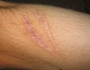

scarring

Definition: A scar (or scar tissue) is an area of fibrous tissue that replaces normal skin after an injury. Scars result from the biological process of wound repair in the skin, as well as in other organs, and tissues of the body. Thus, scarring is a natural part of the healing process. With the exception of very minor lesions, every wound (e.g., after accident, disease, or surgery) results in some degree of scarring. An exception to this are animals with complete regeneration, which regrow tissue without scar formation.
Source: Wikipedia
Wikipedia Page (Something wrong with this association? Let us know.)
Wikidata Page (Something wrong with this association? Let us know.)